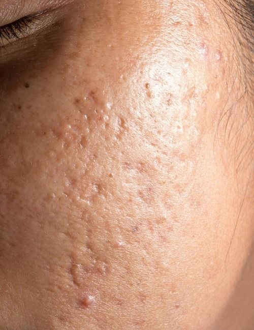
Behandlingar för aktiv akne och akneärr — anpassade efter ditt hudtillstånd
Akne och akneärr behandlas på olika sätt beroende på hudens tillstånd. Vid aktiv akne arbetar vi med djuprengörande behandlingar och kemiska peelingar som balanserar huden och förebygger nya utbrott.
För akneärr och ojämn hudstruktur efter läkt akne är microneedling vår mest effektiva metod.
Vid svår eller mycket inflammerad akne rekommenderar vi en konsultation först — rätt hudvård kan vara ett bra första steg för att lugna huden innan behandling påbörjas.
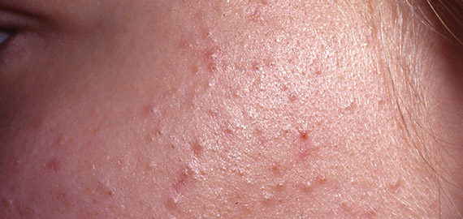
Den mildaste formen av akne — pormaskar utan inflammation. Består av svarta (öppna) och vita (stängda) komedoner och gör huden ojämn även om det inte är rött eller smärtsamt. Vanligast på panna, näsa och haka i T-zonen.
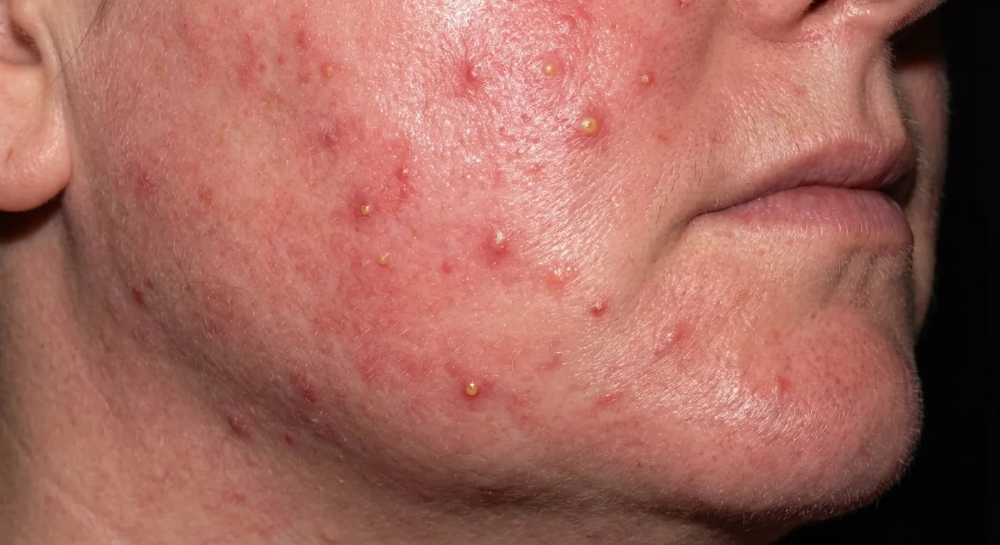
Den vanligaste formen av inflammerad akne. Bildas när pormaskar blir inflammerade och utvecklas till röda upphöjda finnar (papler) eller variga finnar (pustler). Vanligt hos tonåringar och unga vuxna men kan förekomma i alla åldrar.
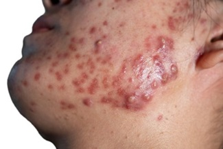
Den svåraste formen av akne med djupa, smärtsamma knölar under huden som läker långsamt och ofta lämnar ärr. Kräver ofta läkarvård (t.ex. isotretinoin/Roaccutan) parallellt med hudbehandlingar. Vid cystisk akne rekommenderar vi alltid en konsultation först.
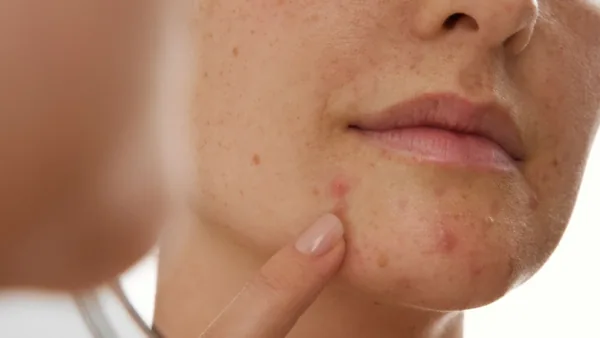
Återkommande utbrott längs käklinjen, hakan och kring munnen. Triggas av hormonella förändringar — menscykel, PCOS, graviditet eller utsättning av p-piller. Drabbar främst kvinnor mellan 20 och 40 år. Kräver ofta en kombination av hudvård och behandling över tid.
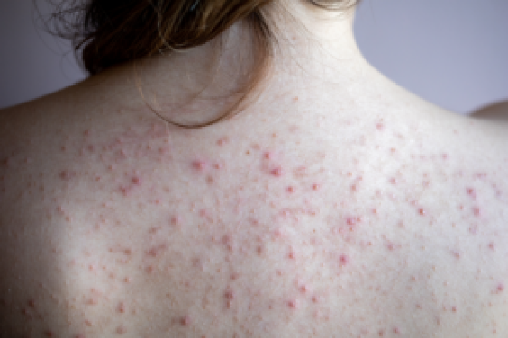
Akne på kroppen — kallas också bacne (rygg) eller chestne (bröst). Vanligt vid svettning, gymträning, åtsittande kläder eller hormonell obalans. Behandlas effektivt med Back Facial och kemiska peelingar för kroppen.
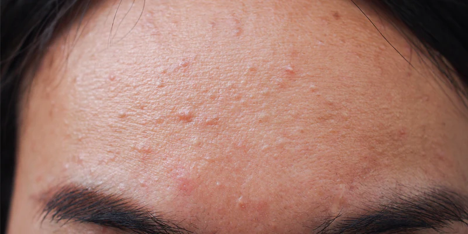
Egentligen inte akne — utan en jästsvampsinfektion (Malassezia) i hårsäckarna som ser ut som akne. Visar sig som små, jämna röda eller köttfärgade prickar, ofta på panna, hårfäste och rygg. Behandlas annorlunda än vanlig akne — vanliga akneprodukter gör det ofta värre. Vid misstänkt fungal akne rekommenderar vi en konsultation.

Vår mest populära behandling vid aktiv akne, tilltäppt hud och återkommande finnar. En djupgående portömningsbehandling som löser upp tilltäppta porer, reducerar inflammation och återställer hudbalansen. Utförs med Dermalogica.
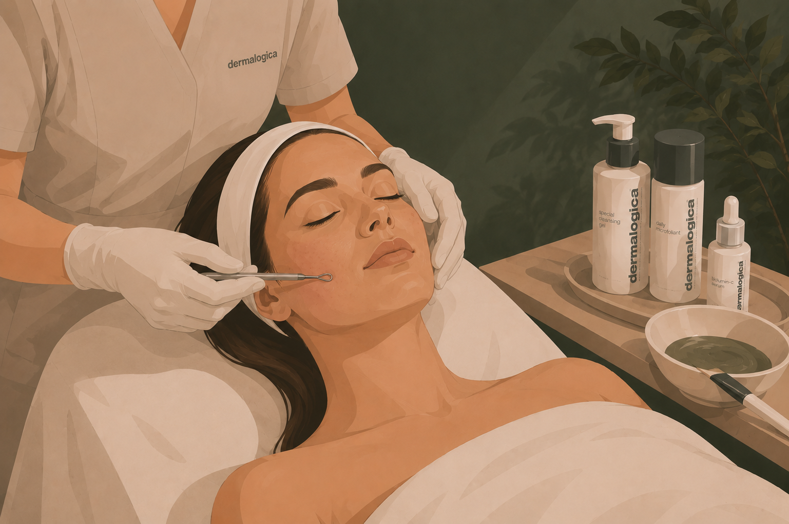
För dig med mer omfattande akne eller djupare tilltäppta porer som kräver mer tid. Samma protokoll som standardbehandlingen men med förlängd och noggrannare portömning. Rekommenderas vid utbredd akne eller flera problemområden.
Kemiska peelingar är ett effektivt komplement vid aknebenägen hud. De rengör porerna på djupet, reducerar inflammation och förebygger nya utbrott.
Viktigt att veta: Kemisk peeling förebygger framtida utbrott och håller huden i balans över tid. För att lösa befintliga pormaskar och tilltäppningar behöver porerna tömmas manuellt under en ansiktsbehandling med portömning. Många kombinerar därför båda för bästa resultat.
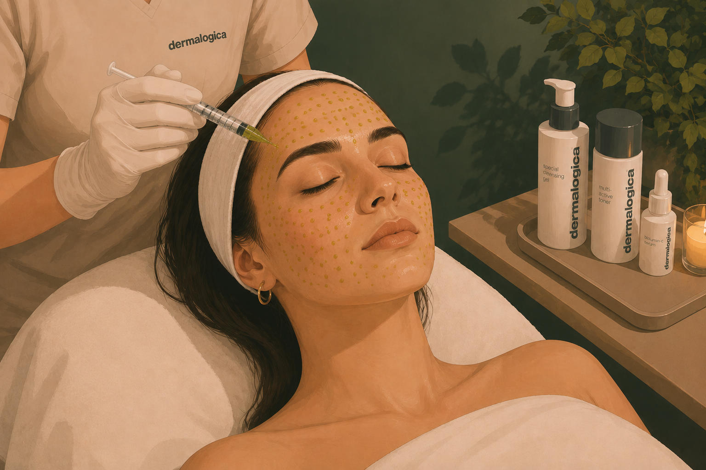
En avancerad TCA-baserad peeling som arbetar antibakteriellt, exfolierande och cellförnyande på djupet. Löser upp tilltäppta porer, reducerar inflammation och stimulerar hudens egen förnyelseprocess — utan kraftig fjällning.
 BioRePeel
BioRePeel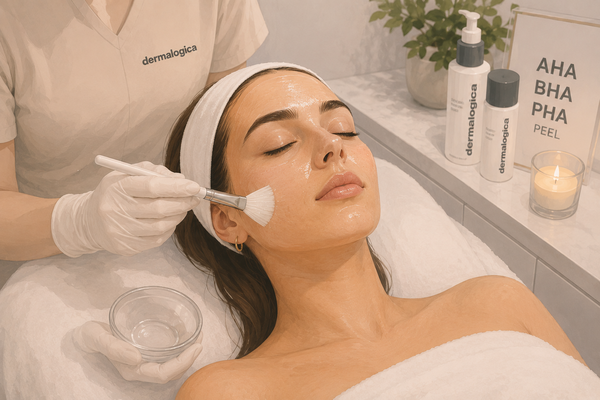
En aktiv exfolierande peeling med kombinationen AHA-, BHA- och PHA-syror som rengör porer, reducerar orenheter och förbättrar hudens struktur. BHA (salicylsyra) löser upp talg i porerna och är särskilt bra vid akne.
En resultatinriktad kemisk peeling som anpassas efter din hud. Stimulerar cellförnyelse, förbättrar hudens struktur och ger klarare hudton. Passar vid aktiv akne, tilltäppt hud eller ojämn ton efter läkning.
Microneedling är vår mest effektiva metod för akneärr och ojämn hudstruktur efter läkt akne. Behandlingen stimulerar hudens egen kollagenproduktion och bygger upp huden inifrån.
Viktigt att veta: Vid aktiv inflammerad akne rekommenderar vi en konsultation först — rätt hudvård kan vara ett bra första steg för att lugna huden innan microneedling kan utföras. Boka en kostnadsfri Hud & Laser-konsultation för en individuell bedömning.
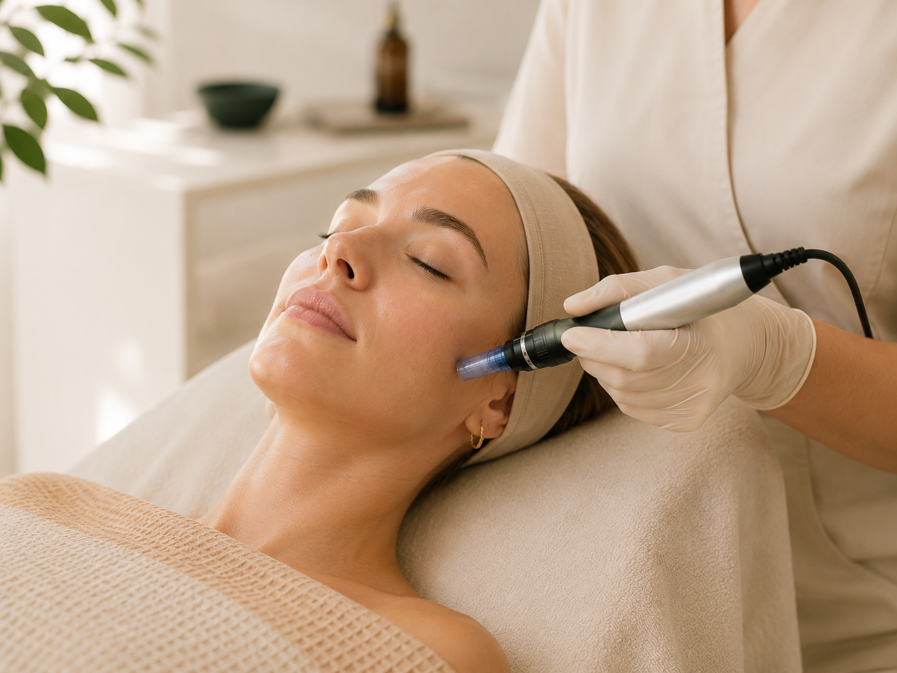
En klassisk microneedling som stimulerar hudens egen kollagenproduktion och förbättrar hudens struktur, lyster och elasticitet. Bra för dig med lättare akneärr, ojämn struktur eller som vill arbeta förebyggande mot fina linjer.

Vår mest avancerade behandling för akneärr och hudförnyelse. Kombinerar kemisk peeling, microneedling med regenererande cocktail (polynukleotider + hyaluronsyra), lugnande bio-cellulose mask och LED/IR-ljusterapi. Arbetar både ytligt och på djupet för maximalt resultat.
 Bio-cellulose mask
Bio-cellulose mask LED-terapi
LED-terapi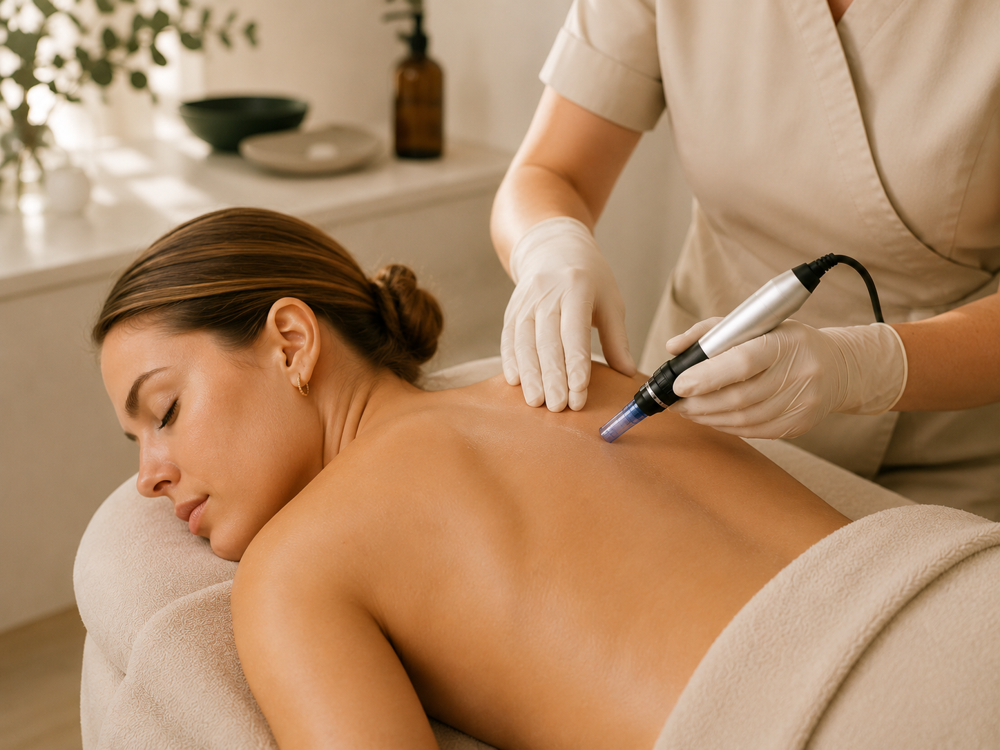
Microneedling anpassad för ryggen vid akne, akneärr eller ojämn hudstruktur. Stimulerar hudens läkning och förbättrar hudkvaliteten över tid.
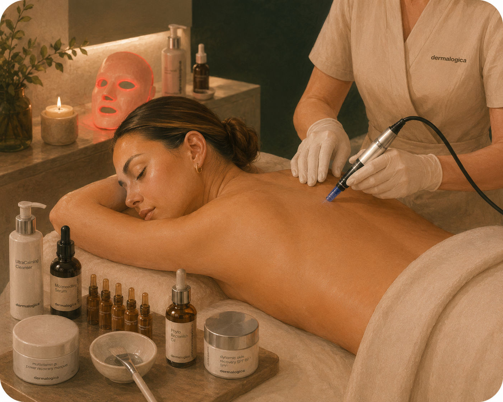
Den mest avancerade behandlingen för akneärr och hudförnyelse på ryggen. Kombinerar kemisk peeling, microneedling och regenererande cocktail för djupare hudförbättring och minskade ärr.
Det beror på vilken form av akne du har och hur omfattande den är. Vid lättare komedonal eller papulopustulös akne rekommenderar vi Advanced Acne Detox och kemisk peeling som komplement. Vid mer omfattande akne kan microneedling efter läkning förbättra ärr och hudstruktur. Vid cystisk eller hormonell akne rekommenderar vi alltid en konsultation först. Är du tonåring passar Teen Skin Clear.
Vid lättare aktiv akne kan microneedling fungera bra och hjälpa både hud och ärr. Vid mycket inflammerad eller cystisk akne väntar vi tills huden är lugnare — rätt hudvård kan vara ett bra första steg. Vi rekommenderar alltid en kostnadsfri konsultation där vi bedömer din hud individuellt.
Ja, ofta är kombinerade behandlingar mest effektiva vid akne. En vanlig kur är ansiktsbehandling med portömning + kemisk peeling som komplement. Vid ärr efter läkt akne lägger vi till microneedling. Vi planerar gärna en behandlingsplan tillsammans baserad på din hud.
Vuxenakne är vanligare än många tror. Vanliga orsaker är hormonella förändringar (menscykel, PCOS, utsättning av p-piller), stress, kostvanor, fel hudvårdsrutin eller en kombination av faktorer. Akne är inte en hygienfråga och har lite att göra med hur ofta du tvättar ansiktet. Vi hjälper dig hitta de underliggande orsakerna under en konsultation.
Pormaskar är icke-inflammerade tilltäppningar i porerna — svarta eller vita komedoner. Akne är ett bredare begrepp som inkluderar både pormaskar OCH inflammerade former (röda finnar, variga finnar, cystor). Pormaskar är ofta första steget i en akneprocess — om de blir inflammerade blir det "akne".
Fungal akne är inte egentlig akne — det är en jästsvampsinfektion (Malassezia) i hårsäckarna. Det visar sig som små, jämna prickar, ofta på panna, hårfäste och rygg. Skillnaden är viktig eftersom vanliga akneprodukter (salicylsyra, bensoylperoxid) ofta gör det värre. Fungal akne behandlas med antimykotiska produkter och en helt annan hudvårdsrutin. Vid misstanke rekommenderar vi konsultation.
Inte alltid — det beror på form och hur akne hanteras. Inflammerad akne, särskilt cystisk akne, har högre risk för ärrbildning. Att klämma eller pilla själv ökar risken markant. Vid akneärr eller ojämn hudstruktur efter läkning är microneedling vår mest effektiva metod.
Direkt efter behandlingen är huden renare och tilltäppningar borta — men ett litet rött märke kan stanna kvar i några dagar efter portömning. Antalet behandlingar du behöver beror på aknens form och hur din hud svarar. Akne är ett återkommande tillstånd, så regelbundna besök och rätt hemvård är avgörande för att hålla huden i balans över tid.
Vi arbetar med Dermalogica och Dermaceutic och anpassar rekommendationerna efter din hudtyp och aknens form. Nyckelingredienser är salicylsyra (BHA) som löser upp talg, niacinamid som reglerar talgproduktionen, och retinol som främjar cellförnyelse. Vid fungal akne rekommenderas däremot helt andra produkter. Vi sätter ihop en personlig hudvårdsrutin under behandlingen.
Undvik smink första 24 timmarna. Inga starka syror, retinol eller exfoliering i 5–7 dagar. Träna ej, undvik bastu och solning första dygnet. Använd SPF 50 dagligen — solskydd är extra viktigt vid akne för att minska risken för mörka fläckar (PIH). Pilla inte på huden.
Forskning visar att vissa kostfaktorer kan påverka akne — särskilt mejeriprodukter och högglykemisk kost (snabba kolhydrater, socker). Det är dock individuellt. Vi rekommenderar inte drastiska dietförändringar utan att tala med läkare först, men att äta varierat och hålla socker- och mejeriintag balanserat är generellt bra för huden.
"Supernöjd! Isabella är så duktig och proffsig."
Google"Isabella är jättetrevlig och kunnig! Rekommenderar verkligen henne."
Google"Den bästa Isabella – så duktig, trevlig och alltid så hjälpsam. Varmt rekommenderar."
Google"Supertrevlig och duktig! Rekommenderar."
Google"Alltid högsta service. Isabella är noggrann och kunnig på allt. Man känner sig trygg och omhändertagen. Rekommenderas!"
Bokadirekt"Isabella är så go! Så kunnig och delar med sig av sin kunskap utan att tveka när man frågar. Hon vet vad hon gör."
Bokadirekt"Isabella är fantastisk som person och fantastisk på sitt jobb!"
Bokadirekt"Isabella är noggrann och kunnig. Dessutom supertrevlig!"
BokadirektBoka en konsultation så bedömer vi din hud och rekommenderar bästa behandlingsupplägg.
Klicka på det område du vill boka.
Klicka på det område du vill boka.
Boka direkt eller välj tillval i nästa steg.
Boka direkt eller välj tillval i nästa steg.